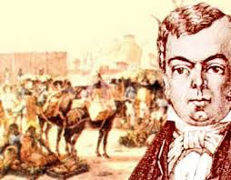
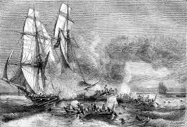

A década de 1840
Panorama geral
Essa década ficou marcada pelos dois acontecimentos que mudaram algumas relações entre Brasil e Inglaterra. Esses acontecimentos estão relacionados com o prestígio que a Inglaterra adquiriu na Independência do Brasil e a carta branca dela para o bombardeio de navios negreiros brasileiros no trajeto Brasil-África.
Lista de eventos marcantes
-
Alves Branco (1844)
A tarifa Alves Branco foi uma lei criada com o objetivo de aumentar a arrecadação de dinheiro para o governo. Ela aumentou a taxa de importação em 30% a 60%, causando um desconforto para a Inglaterra, já que ela apenas pagava uma taxa de 15%. Isso também implicou na criação da lei Bill Aberdeen (um ano depois).
-
Bill Aberdeen (1845)
O Bill Aberdeen foi uma lei inglesa que concedia acesso à marinha real britânica de atuar de maneira rígida contra o tráfico negreiro, que trazia milhares de africanos escravizados para o Brasil. Com a aprovação da lei os ingleses ganharam imenso poder sobre o tráfico negreiro brasileiro, pois eles ganharam a permissão de atacar os navios negreiros dificultando o tráfico e diminuindo a chegada de escravizados ao país na época.